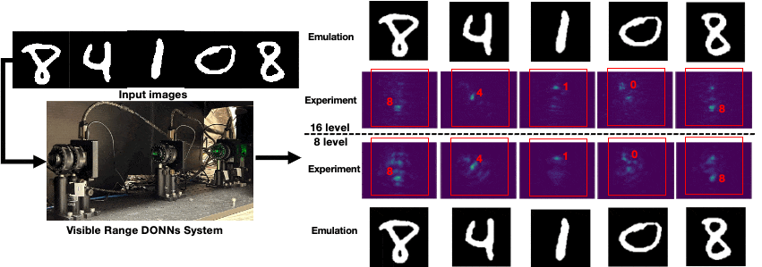

Welcome to LightRidge documentation!¶
Getting Started¶
API Reference¶
LightRidge Design Flow¶
LightRidge is the first open-source end-to-end optical ML compilation framework for diffractive optical computing, which consists of
precise and differentiable optical physics kernels that enable complete explorations of diffractive optical neural networks (DONNs) architectures,
optical physics computation kernel acceleration that significantly reduces the runtime cost in training, emulation, and deployment of DONNs, and
versatile and flexible optical system modeling and user-friendly domain-specific-language (DSL).
{kind=link}
Example – Visible Range codesign via LightRidge (physical demonstration below)
class DiffractiveClassifier_CoDesign(torch.nn.Module):
def __init__(self, phase_func, intensity_func, device, det_x_loc, det_y_loc,
det_size, wavelength=5.32e-7, pixel_size=0.000036, batch_norm=False, sys_size = 200, pad = 100,
distance=0.1, num_layers=2, precision=256, amp_factor=6, approx="Fresnel"):
super(DiffractiveClassifier_CoDesign, self).__init__()
self.amp_factor = amp_factor
self.size = sys_size
self.distance = distance
self.wavelength = wavelength
self.pixel_size = pixel_size
self.pad = pad
self.approx=approx
self.det_size = det_size
self.phase_func = phase_func.to(device)
self.intensity_func = intensity_func.to(device)
self.approx=approx
self.diffractive_layers = torch.nn.ModuleList([layers.DiffractiveLayer(
self.phase_func, self.intensity_func, wavelength=self.wavelength, pixel_size=self.pixel_size,
size=self.size,pad = self.pad, distance=self.distance, amplitude_factor = amp_factor, approx=self.approx, phase_mod=True)
for _ in range(num_layers)])
self.last_diffraction = layers.DiffractiveLayer(None, None, wavelength=self.wavelength, pixel_size=self.pixel_size,
size=self.size, pad = self.pad, distance=self.distance, approx=self.approx, phase_mod=False)
LightRidge DONNs Design Showcase¶
Case study 1 – Visible Range Codesign on MNIST-10 [1][3]
{kind=link}
Case study 2 – Multi-task Learning in DONNs (Nature Scientific Reports 2021) [2]

[1] Yingjie Li, Ruiyang Chen, Weilu Gao and Cunxi Yu. Physics-aware Differentiable Discrete Codesign for Diffractive Optical Neural Networks IEEE/ACM International Conference On Computer Aided Design (ICCAD’22) (22%), Nov. 2022.
[2] Li, Y., Chen, R., Sensale-Rodriguez, B., Gao, W., & Yu, C. (2021). Real-time multi-task diffractive deep neural networks via hardware-software co-design. Scientific reports, 11(1), 1-9.
[3] Chen, Ruiyang, Yingjie Li, Minhan Lou, Jichao Fan, Yingheng Tang, Berardi Sensale-Rodriguez, Cunxi Yu, and Weilu Gao. “Physics-aware Complex-valued Adversarial Machine Learning in Reconfigurable Diffractive All-optical Neural Network.” Laser & Photonics Reviews. Vol 16, July 2022.